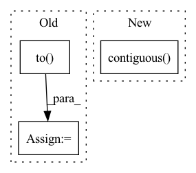

Pattern ID :2772
Before Change
c=c,
bi=bi)
bin_mask = 2**torch.arange(c * bi - 1, -1,
-1).to( discretized_target.device,
discretized_target.dtype)
target_label = torch.sum(bin_mask * discretized_target, -1)
predicted_patches = predicted_patches[mask]
target_label = target_label[mask]
loss = F.cross_entropy(predicted_patches, target_label)
return loss
After Change
// reshape target to patches
target = target.clamp(max = mpv) // clamp just in case
avg_target = reduce(target, "b c (h p1) (w p2) -> b (h w) c", "mean", p1 = p, p2 = p).contiguous()
channel_bins = torch.arange(bin_size, mpv, bin_size, device = device)
discretized_target = torch.bucketize(avg_target, channel_bins)
In pattern: SUPERPATTERN
Frequency: 3
Non-data size: 3
Instances Fragment ID: 15464331
Project Name: lucidrains/vit-pytorch
Commit Name: 64a2ef6462bde61db4dd8f0887ee71192b273692
Time: 2021-06-16
Author: lucidrains@gmail.com
File Name: vit_pytorch/mpp.py
M Class Name: MPPLoss
N Class Name: MPPLoss
M Method Name: forward(4)
N Method Name: forward(4)
M Parent Class: nn.Module
N Parent Class: nn.Module
M File Name: vit_pytorch/mpp.py
N File Name: vit_pytorch/mpp.py
M Start Line: 53
M End Line: 82
N Start Line: 53
N End Line: 72
Before Change
"""
// conv for compare
escape_NaN = torch.Tensor([1e-4])
escape_NaN = escape_NaN.to( device)
wi = wi[0] // [L, C, k, k]
max_wi = torch.sqrt(
torch.sum(torch.pow(wi, 2) + escape_NaN, dim=[1, 2, 3], keepdim=True))
After Change
yi = F.conv2d(yi, fuse_weight, stride=1)
// (B=1, 32, 32, 32, 32)
yi = yi.contiguous().view(1, int_bs[2], int_bs[3], int_fs[2], int_fs[3])
yi = yi.permute(0, 2, 1, 4, 3).contiguous()
yi = yi.view(1, 1, int_bs[2]*int_bs[3], int_fs[2]*int_fs[3])
yi = same_padding(yi, [k, k], [1, 1], [1, 1])
yi = F.conv2d(yi, fuse_weight, stride=1) Fragment ID: 15464335
Project Name: nipponjo/deepfillv2-pytorch
Commit Name: b56ad8569aeea17343cedc9c7331223e134c228f
Time: 2021-12-02
Author: 28433296+nipponjo@users.noreply.github.com
File Name: model/networks_tf.py
M Class Name: ContextualAttention
N Class Name: ContextualAttention
M Method Name: forward(4)
N Method Name: forward(4)
M Parent Class: nn.Module
N Parent Class: nn.Module
M File Name: model/networks_tf.py
N File Name: model/networks_tf.py
M Start Line: 309
M End Line: 467
N Start Line: 338
N End Line: 464
Before Change
def forward(self, row_index, ind, x, y = None):
x = x.float()
hs = [torch.randn(x.size(0), self.args["hidden_size"]).to( self.device) for _ in range(self.args["num_units"])]
cs = None
if self.args["rnn_cell"] == "LSTM":
cs = [torch.randn(x.size(0), self.args["hidden_size"]).to(self.device) for _ in range(self.args["num_units"])]
xs = torch.split(x, 1, 1)
//print(xs[0].size())
//xs = [torch.squeeze(k) for k in xs]
for x in xs:
hs, cs = self.rim_model(row_index, ind, x, hs, cs)
h = torch.cat(hs, dim = 1)
preds = self.Linear(h)
if y is not None:
y = y.long()After Change
//xs = [torch.squeeze(k) for k in xs]
for x in xs:
hs, cs = self.rim_model(row_index, ind, x, hs, cs)
preds = self.Linear(hs.contiguous() .view(x.size(0), -1))
if y is not None:
y = y.long()
probs = nn.Softmax(dim = -1)(preds) Fragment ID: 15464350
Project Name: dido1998/recurrent-independent-mechanisms
Commit Name: d87a800096eaa36730cbabac535eea24973f3799
Time: 2020-02-11
Author: adidolkar123@gmail.com
File Name: networks.py
M Class Name: MnistModel
N Class Name: MnistModel
M Method Name: forward(5)
N Method Name: forward(5)
M Parent Class: nn.Module
N Parent Class: nn.Module
M File Name: networks.py
N File Name: networks.py
M Start Line: 151
M End Line: 161
N Start Line: 188
N End Line: 198